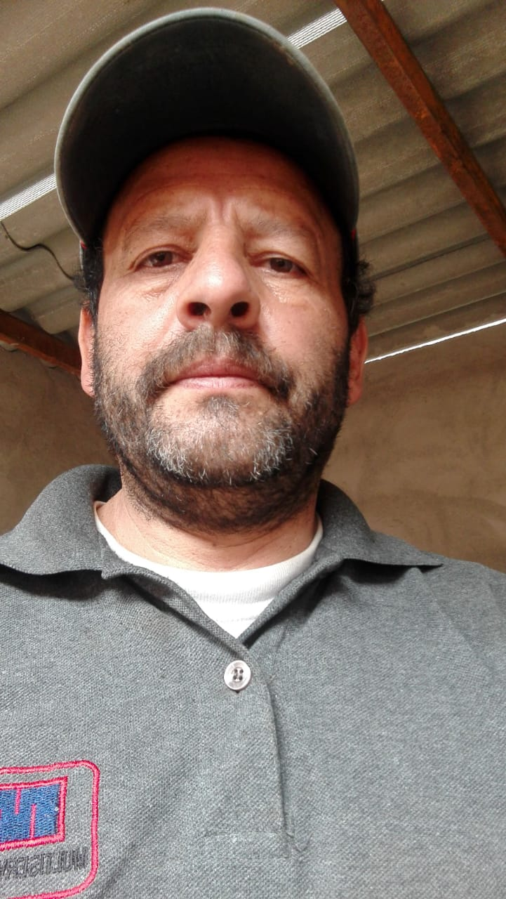

La verdad el cambio ha sido demasiado notorio, desde el primer día en el que uno comienza con el trabajo con el maestro, lo recomiendo 100% sin dudarlo, de verdad que les agradezco por todo lo que han hecho por mí por la confianza y el apoyo que han brindado

EDUARDO FERNANDEZ
Hola soy Eduardo les cuento algo de mi historia, he pasado uno situación bastante dura con mi esposa gloria, nuestro matrimonio casi se acaba, basado en los inconvenientes y peleas constantes con mi esposa Gisbel, gracias a la colaboración a el maestro de AMORES DIVINOS, he logrado que mi esposa permanezca a mi lado, ya llevo bastante tiempo, y el trabajo y orientación considero que ha sido exitoso con nuestro amor.
GLORIA SANCHEZ
El Maestro me devolvió las ganas de seguir viviendo, me lleno de felicidad al retornar a mi pareja les cuento como paso nosotros teníamos relación perfecta hasta que apareció su ex enamorada con la cual comenzó a salir y luego me abandonó por ella, al principio pensé que lo había hecho por que ya no me amaba pero no me explicaba el porque el se fue así de repente sin ninguna explicación, y estaba tan desesperada que había pensado en quitarme la vida. Un familiar mi tia me recomendo con el Maestro al cual recurri para resolver mi problema, él vio en su mesa que su ex enamorada le había hecho un hechizo de amor, gracias a el Maestro se pudo romper ese hechizo y mi amado regreso a mi, ahora estoy embarazada y muy feliz al lado suyo, ahora solo estamos unidos él y yo y nadie podrá romper lo que el maestro unió, muchas gracias Maestro.
JOSE IZTURIZ
Gracias maestro Juan De Dios por ayudarme a recuperar a mi esposa y poder tener estabilidad en mi negocio, en serio no me alcanzará la vida para agradecerle a usted maestro, gracias de corazón.